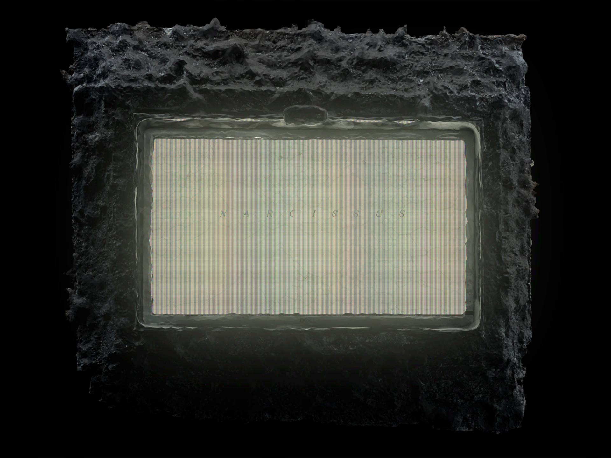
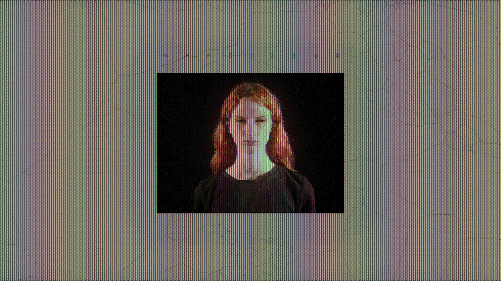
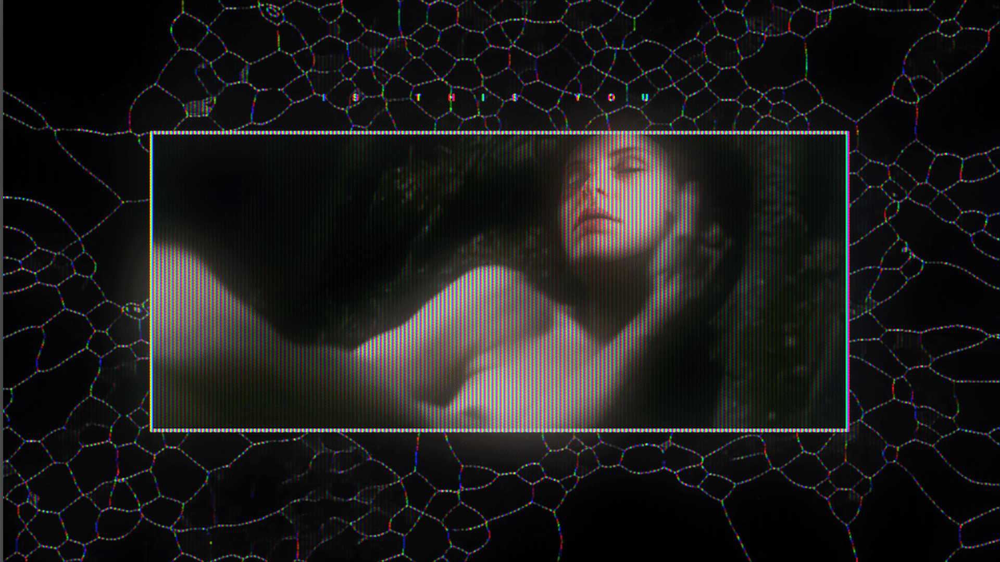
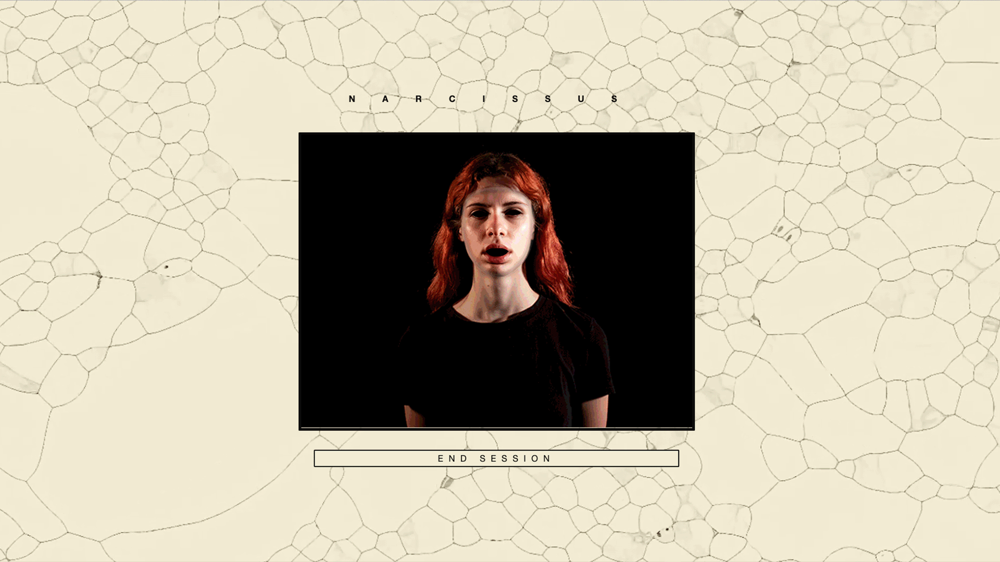
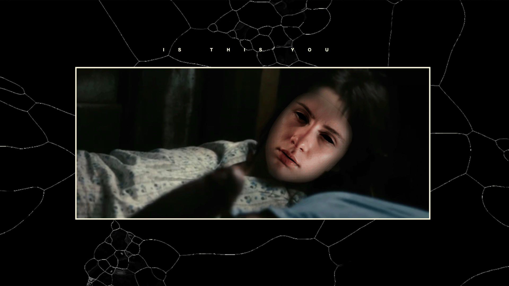
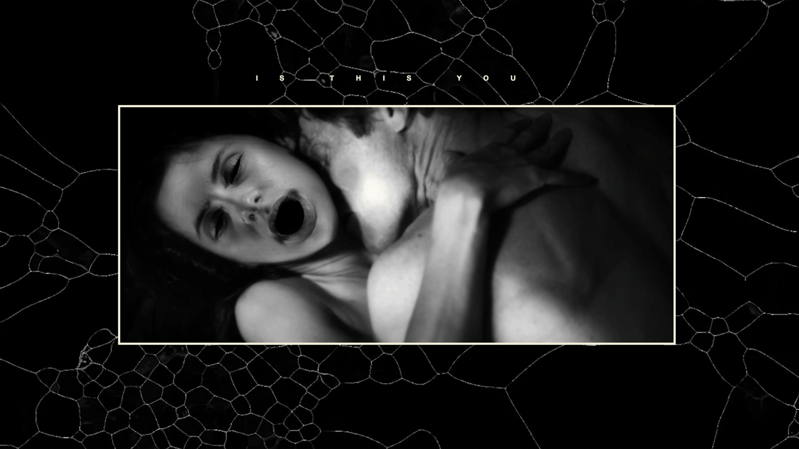
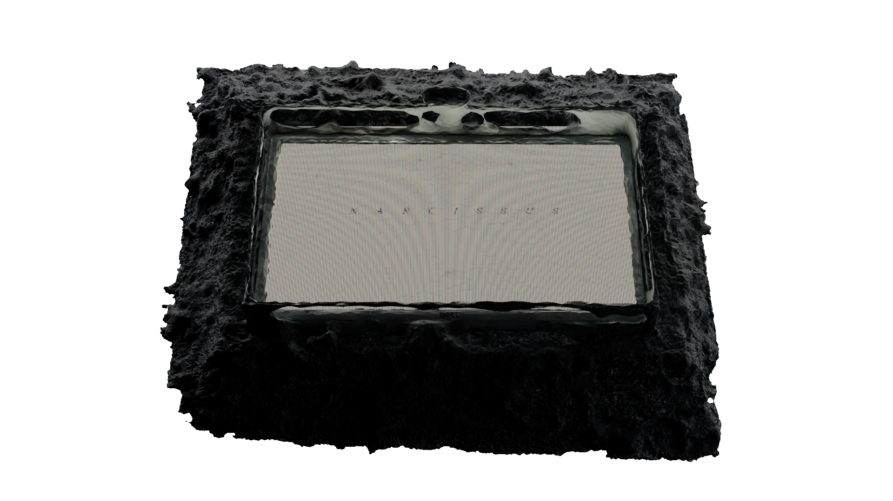

Narcissus―Is this you [from lat. narcissus, gr. νάρκισσος, der. of νάρκη “sopor”]
1 ― Mythological figure punished for being indifferent towards love: he fell in love with his own image reflected until he died.
2 ― In sexology, a pathological attitude to sexual life, whereby the subject enjoys admiring his own body.
3 ― In psychiatry, a personality disorder that leads those who are affected to exploit other people to achieve their own aims or to magnify themselves.
Narcissus is a performative space in which users can experience the problematics of an enquiry about the intimate nature of the machine and the human.
The action of the machine represents a powerful tool for the formal manipulation of reality, capable to produce narratives that project human desires, dreams and aspirations into the physical world.
The action of the machine produces a dimension of neo-positivism in which the possibility of human intervention on reality is exponentially enlarged by the aid of a neutral agent devoid of its own desires, dreams and aspirations.
The result of this cooperation is a partial impairment of humans' physical limitedness, which can reveal a deeper human nature emerging through the dialogue and the confrontation with the machine.
narcissus
the viewer approaches a monitor on which he sees his own image projected.
after a rapid procedure allowing a photograph to be saved, a digital reproduction of the user's face is superimposed on the real one. this digital alter ego's facial expression is manipulated in such a way as to display emotions in response to those manifested by the observer.

is this you
the asset that powers narcissus is simultaneously used to project the user's face onto the protagonists of a montage of videos.
is this you uses as source footage a selection of clips shouted by directors well known for producing controversial and disturbing contents, such as Von Trier, Lanthimos, Noé and Kubrick.




